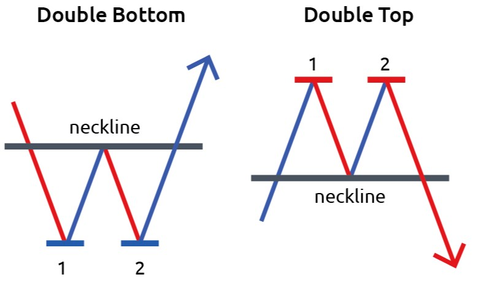
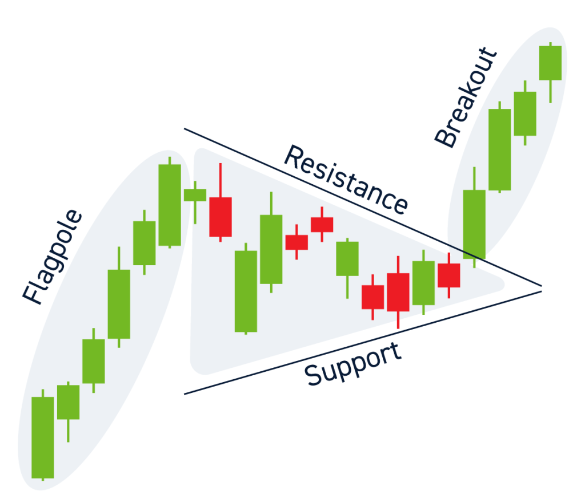
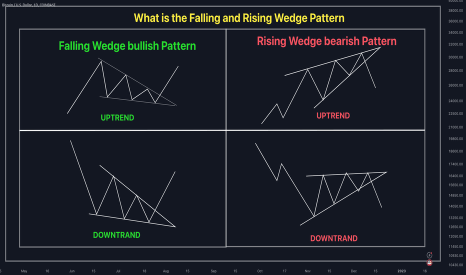
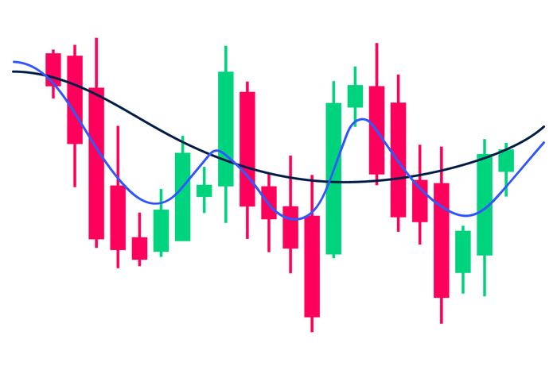

Lets deep dive into the understanding of charts!!
Understanding Stock Market Charts
Stock market charts are crucial tools for investors and traders. They visually represent the price movements and trading volumes of stocks, helping to identify patterns and trends. By studying these charts, one can make informed decisions about when to buy or sell stocks. Understanding the different types of charts and how to interpret them is the first step towards mastering stock market analysis.
Types of Stock Market Charts
Line Charts

These are the simplest form of charts, showing the closing prices of stocks over a period. They are great for identifying long-term trends but lack detailed information.
Bar Charts

These charts provide more information than line charts. Each bar represents a trading day, showing the opening, closing, high, and low prices. Bar charts help in understanding the daily price range and trends.
Candlestick Charts

Popular among traders, candlestick charts offer a visual representation of price movements. Each candlestick shows the opening, closing, high, and low prices for a specific period. The body of the candlestick indicates the price range between opening and closing, while the wicks represent the high and low prices.
Point and Figure Charts

These charts focus on price movements without considering time. They are useful for identifying significant price changes and trends, filtering out minor price fluctuations.
Key Elements of Stock Market Charts
To make correct judgments based on stock market charts, it’s essential to understand their key elements:
- Price: The most critical element, representing the value of the stock at any given time.
- Volume: Indicates the number of shares traded during a specific period. High volume often accompanies significant price movements.
- Time Frame: Charts can be set to different time frames, such as daily, weekly, or monthly. Choosing the right time frame depends on your trading strategy and investment goals.
Identifying Trends
Trends are the general direction in which a stock’s price is moving. They can be upward (bullish), downward (bearish), or sideways (neutral). Identifying trends is crucial for making trading decisions.
- Uptrend: Characterized by higher highs and higher lows. It indicates a positive market sentiment and suggests buying opportunities.
- Downtrend: Marked by lower highs and lower lows. It reflects negative market sentiment, signaling selling or short-selling opportunities.
- Sideways Trend: When the price moves within a narrow range, neither rising nor falling significantly. It suggests indecision in the market and can indicate a potential breakout in either direction.
Technical Indicators
Technical indicators are mathematical calculations based on the price, volume, or open interest of a stock. They help in predicting future price movements. Some commonly used indicators include:
- Moving Averages: These smooth out price data to identify the direction of the trend. The most common are the simple moving average (SMA) and the exponential moving average (EMA).
- Relative Strength Index (RSI): Measures the speed and change of price movements. It ranges from 0 to 100, with values above 70 indicating overbought conditions and below 30 indicating oversold conditions.
Top 10 Practical Stock Market Trends
1. Downward Triangle Trend

Definition: A downward triangle trend, also known as a descending triangle, is a bearish pattern characterized by a downward-sloping upper trendline and a horizontal lower trendline.
Identification:
- Upper Trendline: Connects a series of lower highs.
- Lower Trendline: Remains flat, connecting multiple lows.
- Volume: Decreases as the pattern progresses.
Interpretation: This trend indicates selling pressure and potential price decline once the support level breaks. It's a signal to short-sell or avoid buying until a new trend emerges.
2. Parabolic Trend

Definition
A parabolic trend, also known as a parabolic curve, is a steep upward price movement resembling a parabola.
Identification
- Sharp Price Increase: Sudden and steep rise in stock price.
- Accelerating Rate: The rate of increase accelerates over time.
- High Volume: Often accompanied by high trading volumes.
Interpretation
This trend indicates intense buying interest and a potential bubble. Investors should be cautious, as a parabolic trend often precedes a sharp correction.
3. Head and Shoulders Trend

Definition
The head and shoulders trend is a reversal pattern indicating a shift from a bullish to a bearish trend.
Identification
- Three Peaks: One higher peak (head) between two lower peaks (shoulders).
- Neckline: A horizontal or slightly sloped line connecting the lows of the two troughs.
- Volume: Higher during the formation of the head and lower during the right shoulder.
Interpretation
This trend signals the end of an uptrend and the beginning of a downtrend. Breaking the neckline confirms the pattern, suggesting selling opportunities.
4. Cup and Handle Trend

Definition
The cup and handle trend is a bullish continuation pattern that resembles a teacup.
Identification
- Cup Shape: Rounded bottom indicating a period of consolidation.
- Handle: A short-term downtrend following the cup.
- Breakout: Price movement above the handle's upper trendline.
Interpretation
This trend suggests a continuation of the previous uptrend. The breakout point is a signal to buy, anticipating further price increases.
5. Double Top and Double Bottom Trends
Definition
Double top and double bottom trends are reversal patterns indicating the end of an existing trend.
Identification
- Double Top: Two consecutive peaks of similar height separated by a trough.
- Double Bottom: Two consecutive troughs of similar depth separated by a peak.
- Volume: Higher at the first peak/trough and lower at the second.
Interpretation
Double Top: Signals the end of an uptrend and the
beginning of a downtrend. Sell when the price falls below the trough
between the peaks.
Double Bottom: Signals the end of a downtrend and the
beginning of an uptrend. Buy when the price rises above the peak
between the troughs.
6. Flag and Pennant Trends
Definition
Flag and pennant trends are short-term continuation patterns indicating a brief consolidation before the trend resumes.
Identification
- Flag: A rectangular pattern formed by parallel trendlines.
- Pennant: A small symmetrical triangle pattern.
- Volume: Decreases during consolidation and spikes at breakout.
Interpretation
Both patterns suggest the continuation of the preceding trend. Breakouts are signals to enter the market in the direction of the trend.
7. Wedge Trend
Definition
The wedge trend is a reversal pattern indicating a change in trend direction.
Identification
- Rising Wedge: Upward-sloping trendlines converging.
- Falling Wedge: Downward-sloping trendlines converging.
- Volume: Decreases as the pattern progresses.
Interpretation
Rising Wedge: Signals a potential downtrend. Sell
when the price breaks below the lower trendline.
Falling Wedge: Signals a potential uptrend. Buy when
the price breaks above the upper trendline.
8. Symmetrical Triangle Trend

Definition
A symmetrical triangle trend is a neutral continuation pattern indicating a period of consolidation before the trend resumes.
Identification
- Trendlines: Converging upper and lower trendlines.
- Volume: Decreases as the pattern progresses.
- Breakout: Can occur in either direction.
Interpretation
The breakout direction determines the trend continuation. Buy if the price breaks above the upper trendline, and sell if it breaks below the lower trendline.
9. Rectangle Trend

Definition
The rectangle trend is a continuation pattern indicating a period of consolidation before the trend resumes.
Identification
- Parallel Trendlines: Horizontal upper and lower trendlines.
- Volume: Decreases during consolidation and spikes at breakout.
Interpretation
This trend suggests the continuation of the preceding trend. Enter the market when the price breaks out of the rectangle in the direction of the trend.
10. Moving Average Trend
Definition
The moving average trend uses moving averages to identify the direction and strength of a trend.
Identification
- Short-Term Moving Average: Crosses above the long-term moving average for a bullish signal.
- Long-Term Moving Average: Crosses above the short-term moving average for a bearish signal.
- Volume: Confirms the trend.
Interpretation
Moving averages smooth out price data to identify trends. A crossover indicates a trend reversal. Buy when the short-term moving average crosses above the long-term moving average, and sell when it crosses below.
Conclusion
Understanding and identifying these ten stock market trends can significantly enhance your investment strategy. Each trend provides valuable insights into potential price movements, helping you make informed decisions. Keep practicing chart analysis to refine your skills and stay ahead in the market.
By mastering these trends, you can improve your ability to predict market movements and capitalize on investment opportunities. Happy trading!